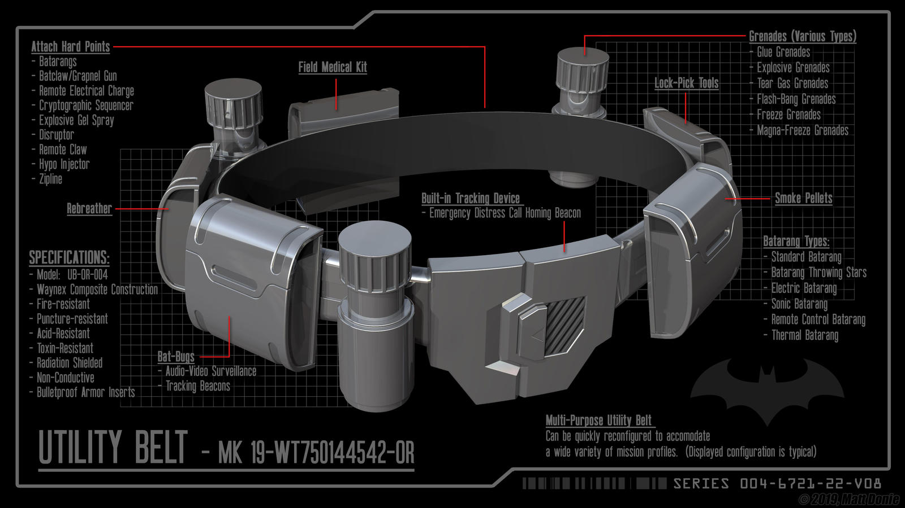

Wayne Enterprises Applied Sciences
This is Batman's Utility Belt
Use me for your adventures! Twelve pouches, zero wasted space, and an answer for every problem Gotham can throw at you.
Model No. MK 19-WT750144542-OR
Classified blueprint
The Belt, Up Close

Why this belt matters
This is Batman's gadget belt, the one piece of gear he never leaves the cave without. Some of its tools are built for stealth and some are built for the fight, but every single one earns its spot. Batman has no superpowers. He cannot fly, he is not bulletproof, and he cannot see through walls. What he has is preparation, and this belt is preparation you can wear. When a plan falls apart on a rooftop at two in the morning, the answer is almost always somewhere on his waist.
Built by Wayne Enterprises
Belt's Specs and Technology
The belt is made from Waynex composite, a lab grown fiber that is lighter than leather and tougher than steel plate. Here is what that buys him.
-
Fire Resistant
Holds its shape at over 1,000 degrees. He can sprint through a burning warehouse and every pouch still opens.
-
Waterproof
Sealed to 100 meters. Gotham Harbor is cold, dark, and deep, and the gear inside comes out bone dry.
-
Shockproof
Non conductive, so a jolt from a villain's gadget never reaches the electronics or the man wearing it.
-
Corrosion Resistant
Shrugs off acid and toxins. Chemical plant showdowns are a normal Tuesday in Gotham, and this belt is ready for them.
-
Lightweight
Fully loaded it weighs less than a laptop. Nothing slows him down on a jump between rooftops.
-
Always Trackable
The buckle hides a homing beacon. If he goes quiet, Alfred knows exactly where to send help.
Tap or hover a card to flip it
What's in the Pouches
The case for the belt
Why This Belt Is Legendary
- It turns brains into an advantage. Batman wins by thinking three moves ahead. The belt means the tool for move three is already in his hand.
- It never runs out of options. Thirty tools in a strip of gear the width of your hand. No backpack, no bulky case, no fumbling.
- It protects people, not just Batman. The medical kit, the rebreather, and the homing beacon exist to save lives, including the lives of the bad guys.
- It reconfigures for every mission. Underwater rescue tonight, rooftop chase tomorrow. Swap the pouches and the belt becomes a brand new tool.
- It is built to last a career. Fire, water, acid, electricity, and impact proof. This belt has outlived more villains than anyone can count.
Field log
One Night, One Belt
Want to know why it is the best belt ever made? Follow it through a single shift in Gotham.
- 9:00 PM
Suit up
Alfred loads the pouches for tonight's mission profile. Grapple, batarangs, smoke, and a fresh medical kit.
- 10:40 PM
Rooftop pursuit
The grappling hook carries him across the financial district faster than any car could follow.
- 12:15 AM
The warehouse
The cryptographic sequencer opens the door. Smoke pellets clear the room. A glue grenade keeps the crew in place.
- 1:30 AM
The harbor
A driver is trapped in a sinking car. The rebreather and the waterproof seals make the rescue possible.
- 3:00 AM
Home safe
The homing beacon guides the Batmobile in. Every job got done, and the belt goes back on the rack to be restocked for tomorrow.

Authorized wearer
The Dark Knight
Only one person in Gotham wears this belt. Every pouch is placed so his hand finds it without looking, which is why the draw time is under half a second.
Questions from Gotham
Frequently Asked
How does everything fit in there?
Smart packing. Each pouch is custom molded around its tool, so there is no wasted space and nothing rattles.
Can someone else open the pouches?
Nope. The quick release latches are keyed to Batman's gloves. To anyone else the belt is a very stylish brick.
What happens if it gets damaged?
Lucius Fox keeps spare pouches in the cave. A full rebuild takes one night, and Batman usually has three backup belts ready.
Why gold?
It draws the eye to the belt and away from his face. A small piece of misdirection that has worked for decades.